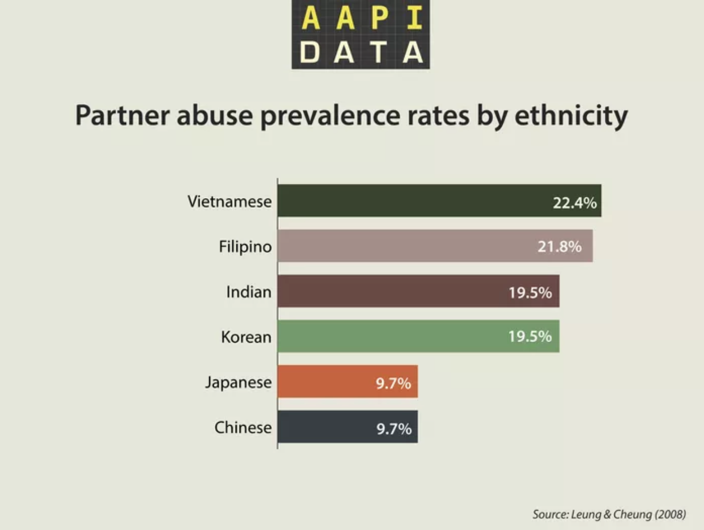
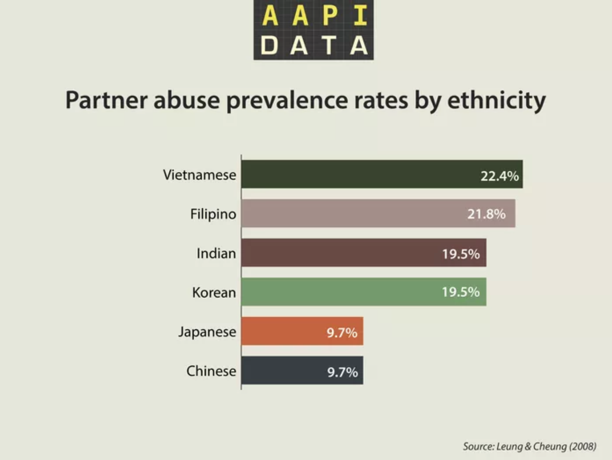

Domestic Violence
 

Xu et al. (2005) found that two out of five Chinese women between the ages of 18 and 60 years who sought health care had been victims of abuse from a partner in their lives and one in five women had experienced abuse from their partners in the past year.
Seeking help
Chinese (7.7%) were statistically less likely to seek help from a mental-health professional.
Verbal Abuse
This study does not explore other forms of abuse, such as emotional and sexual abuse, because the seemingly more pertinent physical aspect of this problem has not yet been fully addressed. In a study assessing the psychological impact of wife abuse in Hong Kong Tang (1997) interviewed 21 battered Chinese women and their children. She reported that the husband’s use of physical and verbal assault was significantly correlated with the wife’s and child’s feelings of distress. She found that the husband’s verbal abuse was specifically related to depression and anxiety in both the battered wife and the children. Further studies in these areas are yet to be addressed.
Exposure to Family Abuse as a Child
61% of Chinese men and women reported being hit regularly as children. 18% of Chinese men and women said that a woman who is being abused should not tell anyone about the abuse. 14% said that a husband should be arrested if he hit his wife
Respondents tended to agree that physical and sexual aggression (e.g., slapping, pushing, throwing objects, and insisting a spouse have sex) was an indicator of violence between spouses. However, they were less likely to consider psychological aggression or financial abuse as indicators of violence between spouses. Older Chinese respondents were more tolerant of the use of force and more likely to justify a husband’s use of violence against his wife. 69% of the overall respondents and 61% of Chinese respondents reported being hit regularly as children. (a significant percentage, similar as above)
Among Chinese women and men aged 50 and older born outside the U.S. (a subset of a study of 262 Chinese women and men in the Greater Los Angeles area): A substantial minority stated that a husband’s violence toward his wife is justified “when the husband catches the wife for having an affair” (41.2% of women and 46.5% of men) and “when the husband finds the wife flirting with someone else” (38.2% of women and 48.8% of men). A significantly larger proportion of women than men stated that a husband’s physical violence toward his wife is justified “when the wife screamed hysterically” (94.1% women and 74.4% of men). A significantly larger proportion of men than women believed that a husband’s use of physical violence is justified “if the wife always nagged” (2.9% of women and 16.3% of men), “if the husband finds the wife drunk” (5.9% of women and 11.6% of men) and “if the wife is unwilling to have sex” (0% of women and 14.0% of men). In general, men and older adults who were “less acculturated” (as defined by the researchers) were more likely to believe that a husband’s use of physical violence toward his wife is justified.